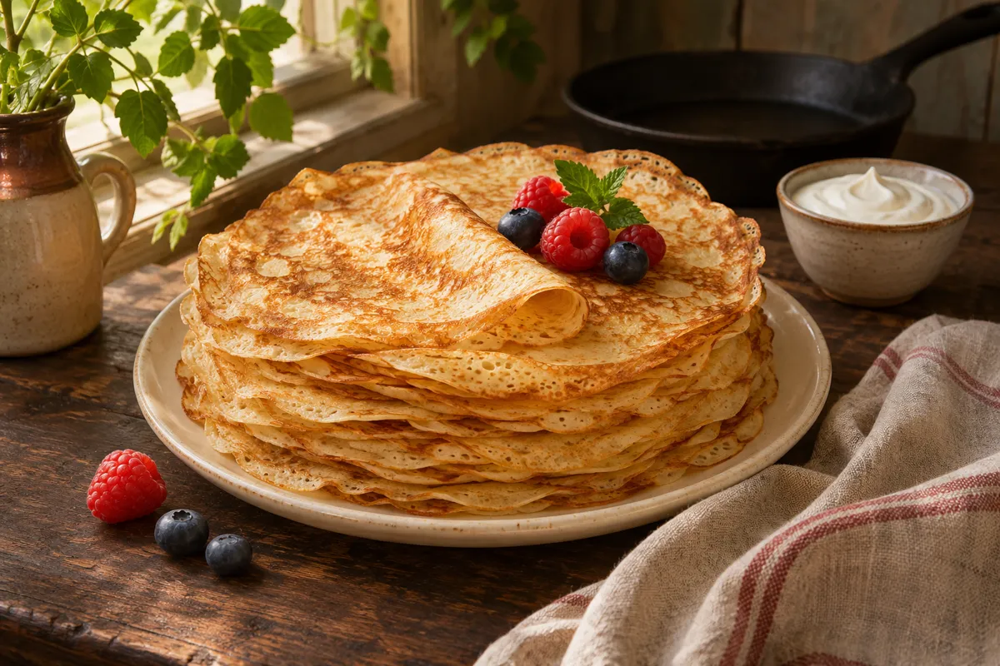

Личный проект Николая
Быть в движении.
Быть собой.
В беге я чувствую жизнь. В шахматах нахожу ясность. В готовке — простой способ позаботиться о близких.
Здесь собираю то, что люблю, и делаю шаг к своей мечте — детскому лагерю летом 2027 года.
Двигаться. Думать. Заботиться.Навыки, которые остаются с нами.
Двигаться
Бег и физкультура
Думать
Шахматы и стратегия
Заботиться
Готовим сами
01 / Тело
Почувствовать силу своего тела

Бег и физкультура
Когда бегу —
чувствую, что живу.
Воздух, трава, небо и каждый шаг. Бег помогает мне почувствовать связь с миром и вернуться к себе.
Бегаю с 2015 года. Для меня это здоровье, дисциплина и радость движения, которой хочется делиться.
Бег — часть моей жизни
В будущем лагере — движение, координация и удовольствие от того, что умеет твоё тело.
02 / Мысль
Увидеть больше одного хода
Шахматы
Спокойствие.
И свой следующий ход.
Мне нравится, как шахматы учат замечать возможности. Остановиться, посмотреть на всю доску и принять решение.
Здесь — мои партии и шахматная статистика. А в идее лагеря — логика, внимание и умение думать наперёд.

03 / Забота
Просто, вкусно, по-домашнему

Готовим сами
Уметь накормить.
Себя и тех, кто рядом.
Простая и вкусная кулинария для детей и мужиков. Сделать блины, собрать пасту, позвать близких к столу — в этом много тепла.
Хочу передать детям навык, который пригодится в любой семье: уверенно приготовить еду своими руками.
Большая идея / Лето 2027
Лето, в котором
становишься самостоятельнее.
Моя цель — организовать детский лагерь, где можно двигаться, думать и учиться заботиться о себе и близких.
Проект в разработкеТелоБег и физкультура
МысльШахматы и стратегия
ЗаботаГотовка своими руками
Программа, место и даты ещё формируются.
Пока делюсь своим путём и развиваю эту идею.